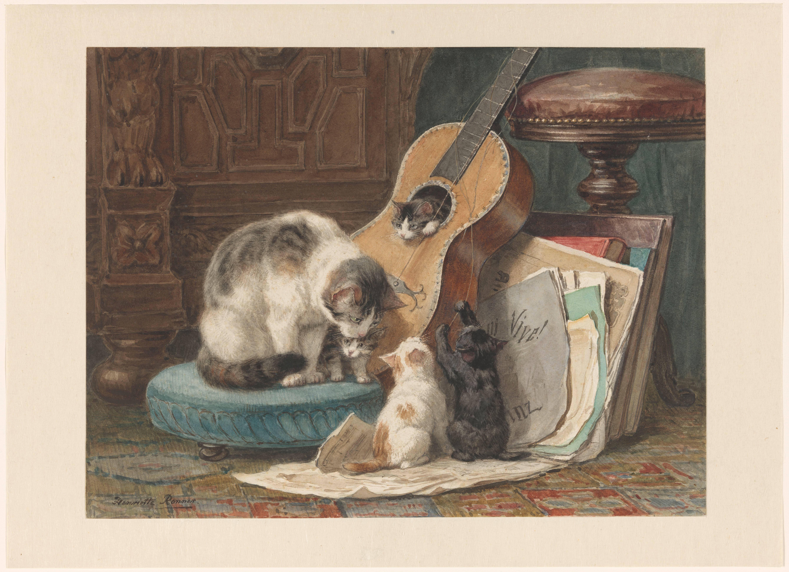

The Musicians
Artist: Henriëtte Ronner
Year: 1876 - 1877
Featured in Cinema
Film(s:) The Aristocats(1970)
The Connection
Henriëtte Ronner's The Musicians depicts cats gathered around musical instruments, bringing a playful, human-like quality to the animals. This whimsical portrayal connects to Disney's The Aristocats (1970), which similarly gives cats human personalities, social roles, and musical talents. Both works imagine cats as more than ordinary pets, presenting them as expressive characters.
← Back to Exhibition